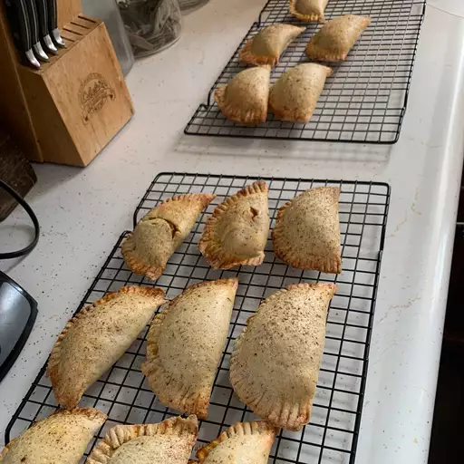

Receta
Empanadas de calabaza

Descripcion
¡Estas empanadas de calabaza son mi versión de las tradicionales mexicanas! Ajusta todas las especias a tu gusto.
ingredientes
Masa
3 tazas de harina para todo uso
⅓ taza de azúcar blanca
1 ½ cucharaditas de sal
¼ cucharadita de polvo para hornear
1 taza de manteca vegetal
1 taza de agua tibia
Relleno
4 tazas de calabaza pura enlatada
1 taza de azúcar blanca
2 huevos grandes
1 ½ cucharaditas de canela molida
1 cucharadita de sal
1 cucharadita de jengibre molido
½ cucharadita de clavo molido
Otro
1 huevo grande batido
Pasos
Paso 1
Precalienta el horno a 350 grados F (175 grados C). Forre las bandejas para hornear con papel pergamino.
Paso 2
Hacer la masa: bata la harina, el azúcar, la sal y el polvo para hornear en un tazón grande. Corta la manteca vegetal en la mezcla de harina hasta que parezca migajas gruesas. Agregue agua tibia, 2 cucharadas a la vez, hasta que la masa comience a unirse. Amasar la masa unas cuantas veces en el bol.
Paso 3
Transfiera la masa a una superficie enharinada. Corte la masa en cuartos, luego corte cada cuarto en tercios para hacer 12 porciones iguales. Enrolle cada porción hasta formar una bola. Tapar con un paño y dejar reposar mientras hacemos el relleno.
Paso 4
Haga el relleno: mezcle la calabaza, el azúcar, los huevos, la canela, la sal, el jengibre y los clavos en un tazón grande hasta que quede suave.
Paso 5
Extienda cada bola de masa sobre una superficie enharinada hasta formar un círculo delgado de 6 pulgadas. Vierta aproximadamente 1/3 de taza de relleno en el centro de cada círculo de masa. Doble la masa sobre el relleno para hacer un pastel en forma de media luna, luego doble los bordes con un tenedor. Colóquelo en las bandejas para hornear preparadas. Pincelar la parte superior con huevo batido.
Paso 6
Hornee en el horno precalentado hasta que el relleno esté caliente y las cortezas estén brillantes y doradas, aproximadamente 20 minutos.